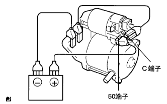
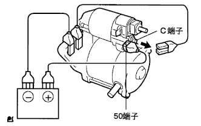
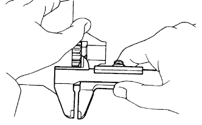
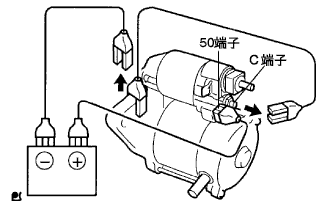
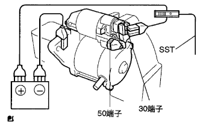

Starter ASSY single inspection |
| 1. Starter ASSY |
Remove the nut and separate the C terminal.
|  |
When connected as shown in the figure, confirm that the pinion gear pops out.
|  |
Even after releasing the C -terminal cable from the state where the pinion gear pops out, confirm that the pinion gear is still out.
|  |
Move the pinoon gear towards the armacha and measure the gap between the pinion end and the stop nut.
|  |
Confirm that when the pinion gear is left out of the starter body cable, the pinion gear returns.
Attach the C terminal with a nut.
Fix the starter to the vise.
|  |
Connect the cable as shown in the figure, and connect the SST (AC/DC probe 400A) to the plus side cable.
Connect the 50 terminals to measure the current value by stable the instructions of the SST (Toyota Electric Calcal Tester).